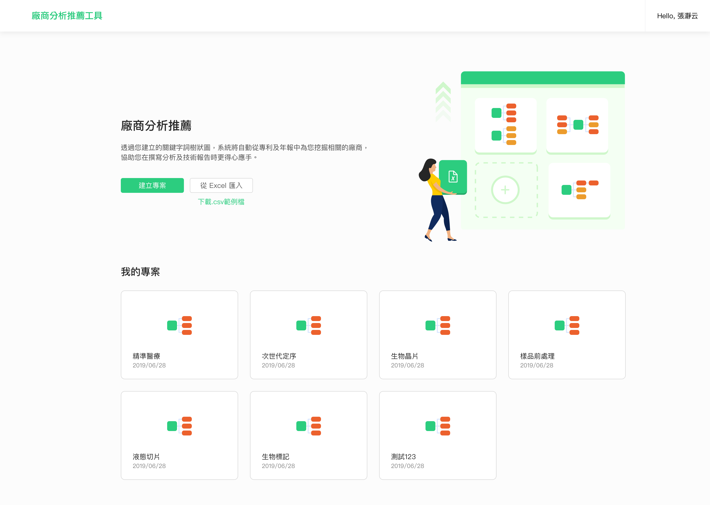
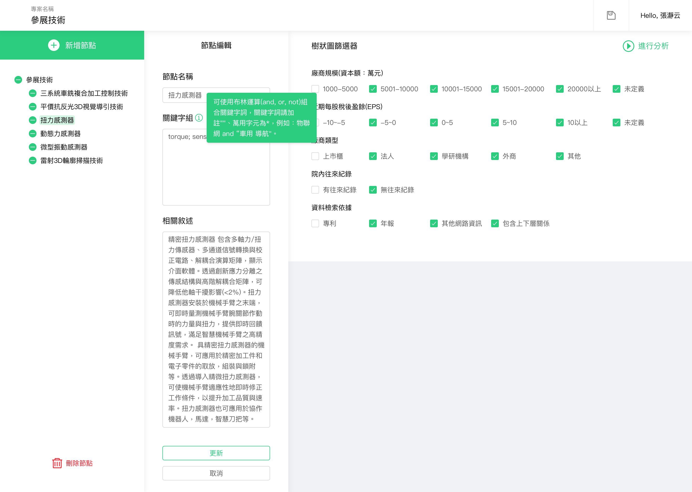
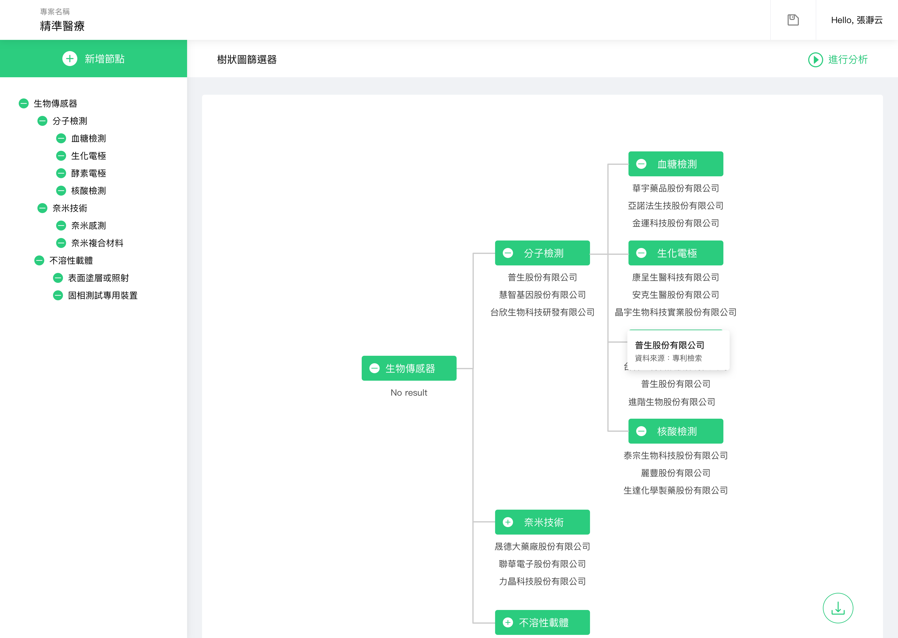
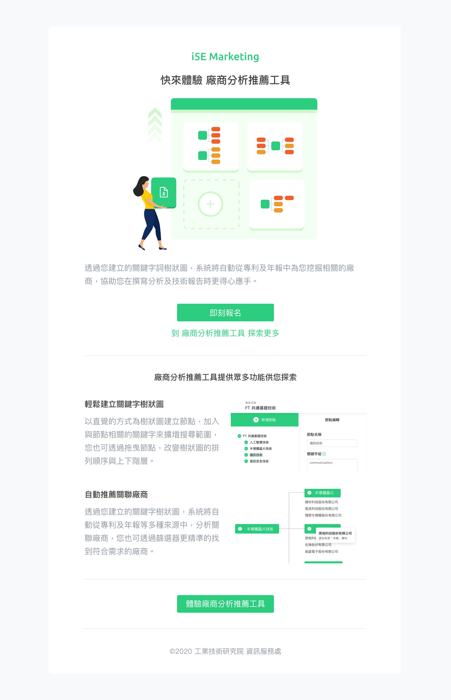

Zih-Hong Lin
Work
About
i5E Analysis Tool
一個設計給企業內部使用的服務，使用者可以透過服務批次輸入感興趣的關鍵技術詞，進而探索及觀測該領域的關聯廠商及產業架構，協助推廣及研發人員在推廣及撰寫計畫書更有效率。
Role: UI/UX Design, Service Design, Front-End Development
   
Next Project:
i5E Marketing